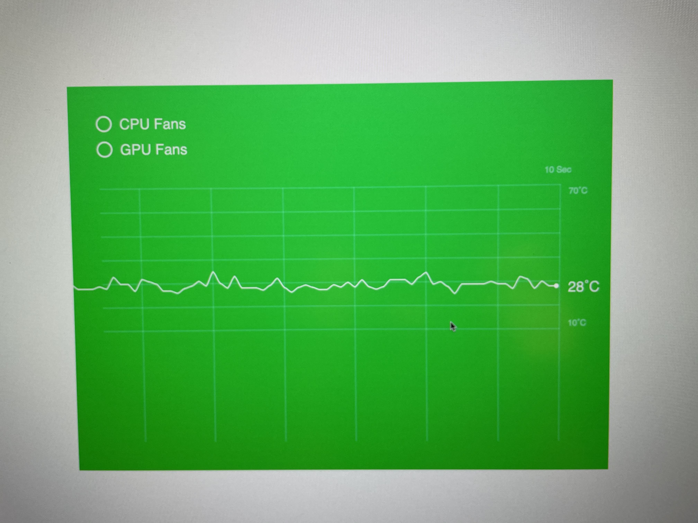
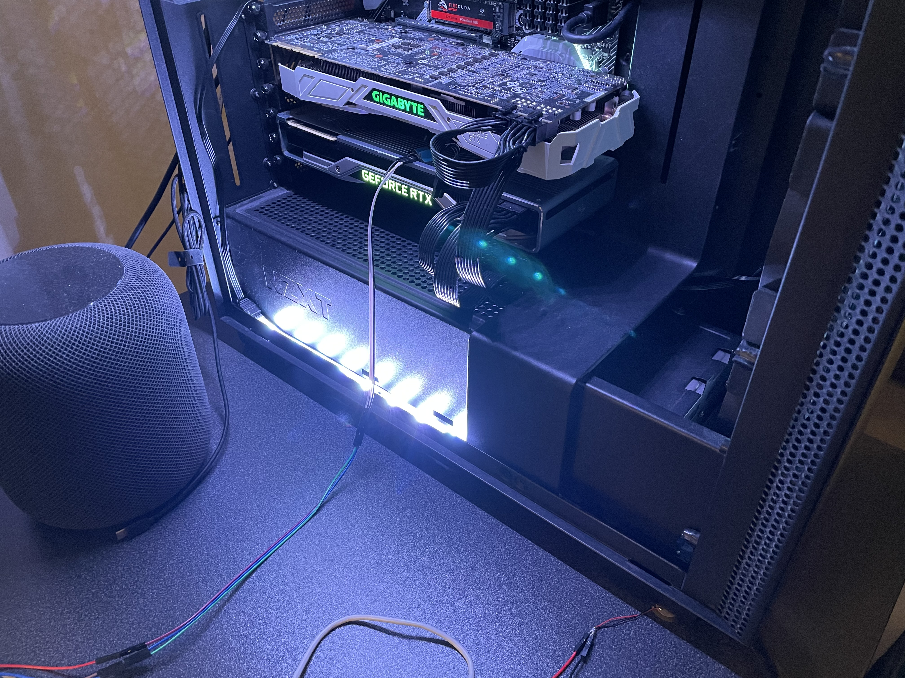

The third project is where we push the capabilities of the Particle Argon board to the next level. We are imagining a data visualization system using Argon's collected data, transmitted through the cloud, and visualized in the browser using P5.js. I started to experiment with different sensors, including temperature sensors, light sensors, and Piezo sensors. Using these elements, I created a computer monitoring system that visualizes the user's gameplay (when the user hits the trigger in an FPS game), its PC's fan speed, and its PC's graphic card temperature.


On the software side, I directly store all of these data as a single string on the Particle.IO cloud. Using a simple data parsing function in P5.js, I distributed all four data in one single read, which can help elevate the server speed and get the data more frequently. After getting these data, I started to visualize them in a 900×650 canvas. The fan speed corresponds with the background color and a toggle in the upper-left corner. The temperature is visualized as a curve in the center of the canvas, and the hit moment is connected with the temperature at the time the user presses the trigger in the real world.
The hardest part of this project is tuning each sensor's exact data or threshold so they can represent real-world computer usage. I was initially planning to use a loudness sensor to detect the fan voice, but it turned out it only measure a certain threshold rather than continuing to give back real-time reading. The Piezo sensor was also a tricky one, and it took me multiple times to measure the practical range for when the CPU fan or GPU fan turned on.
In the future, I would make the whole visualization more interesting. Rather than just using graphs, it is interesting to see how these data pare together to create a more intricate or abstract work that still represents a person's gameplay, and I would further explore and expand on the connecting curves between temperature and hit moment and see what new relationship can be discovered.